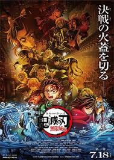

They are many anime in the world differnt time line and differnt story and diffrent anime
- demon salyer
- dragon ball
- pokemon
- doremon
demon slayer:
Demon Slayer: Kimetsu no Yaiba is a globally acclaimed Japanese manga and anime franchise created by Koyoharu Gotouge. It follows the journey of Tanjiro Kamado, a kind-hearted boy who joins the Demon Slayer Corps to find a cure for his sister, Nezuko, after she is turned into a demon and their family is slaughtered by the demon progenitor, Muzan Kibutsuji. Core Story and Setting Set in Taishō-era Japan, the series depicts a centuries-long war between the Demon Slayer Corps and Demons—immortal beings with supernatural powers who feed on humans. Demon Slayers: Human warriors who use specialized Breathing Styles (elemental techniques like Water, Flame, or Thunder) to gain superhuman strength. The Hashira: The nine most powerful elite swordsmen of the Corps. The Twelve Kizuki: An organization of the twelve strongest demons serving directly under Muzan. Media Adaptations Manga: Ran from 2016 to 2020 in Weekly Shōnen Jump, covering 23 volumes. Anime Series: Produced by Ufotable, featuring critically acclaimed animation spanning several seasons covering arcs like Mugen Train, Entertainment District, Swordsmith Village, and Hashira Training. Films & Games: Mugen Train (2020) achieved record-breaking global success, with an Infinity Castle trilogy starting in 2025. Video game adaptations include The Hinokami Chronicles. Popularity and Impact The franchise is a massive cultural phenomenon with immense global circulation figures, significantly boosting Japanese tourism.

Demon slayer anime have a manga ,many volume,and chapters
.jpg)